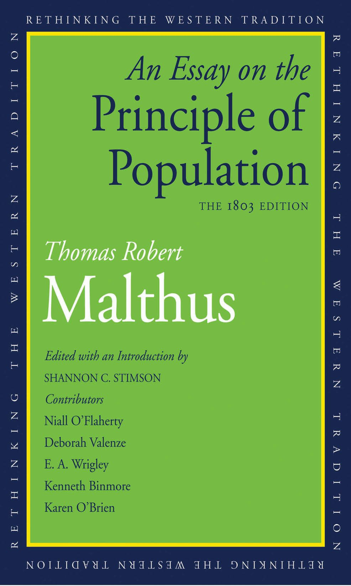

49:51 · 8 OPERE
Appunti sulle origini dell'eugenetica.
Il filo del discorso
La conversazione propone una storia delle idee che hanno reso pensabile la selezione degli esseri umani e la gestione delle popolazioni. Dr Divago parte dalla definizione di eugenetica, passa da Malthus a Galton e intreccia Darwin, Marx, Schopenhauer e Nietzsche con una critica della riduzione della vita a quantità. Il punto di confronto è la tensione fra previsione, potere tecnico e valore della singola persona. Heschel e Leopardi offrono al relatore un linguaggio della trascendenza e del limite; l’esempio conclusivo del tram gli permette di interrogare la responsabilità di chi decide di intervenire. La scheda distingue le influenze documentate dalle successioni di date e dalle analogie polemiche. La matematica delle popolazioni non prescrive da sola politiche eugenetiche; una misura sanitaria non coincide automaticamente con una selezione ereditaria. Vengono precisati il contesto teologico del passo di Malthus, la vicenda della presunta dedica di Marx a Darwin e la data del dilemma di Philippa Foot. La critica alla discriminazione e alla coercizione resta leggibile senza trasformare una genealogia interpretativa in una catena causale inevitabile. Il valore etico della persona è il tema del discorso, mentre accuse contemporanee, giudizi giuridici e letture dei filosofi restano attribuiti al relatore.
I libri nel discorso
Hereditary Genius: An Inquiry into Its Laws and Consequences
Copertina: Copertina autentica della ristampa inglese Prometheus, Great Minds Series, 30 marzo 2006, ISBN 9781591023586. Il catalogo corrente del distributore indica 360 pagine, altri record 355: non viene dedotta una tiratura da questa differenza. Originale Macmillan 1869, distinto dalla seconda edizione 1892. L’immagine non raffigura il facsimile della prima edizione.
Immagine autentica dell’opera, controllata visivamente; l’edizione di riferimento non è attribuita al filmato.
Hereditary Genius, Galton e 1869 espliciti.
Passaggio 6:31 ↗ · Fonti e libro ↗
Saggio sul principio di popolazione (An Essay on the Principle of Population)
Copertina Yale della redazione 1803, diversa dal testo 1798 citato: Copertina Yale University Press 2018, curatela Shannon C. Stimson, The 1803 Edition, 448 pagine. Il record consultato identifica il formato elettronico con ISBN 9780300231892. È una riedizione della seconda redazione, non la copertina del testo anonimo J. Johnson 1798 e non la prova che il passo del capitolo XIX sia identico nelle due redazioni.
Immagine editoriale comune al titolo Yale; ISBN del formato elettronico nel record consultato. La distinzione fra redazioni 1798 e 1803 resta esplicita.
Titolo del saggio sulla popolazione e prima uscita 1798 espliciti.
Passaggio 10:02 ↗ · Fonti e libro ↗
L’infinito
Copertina dei Canti che comprendono L’infinito: Feltrinelli, Universale Economica I Classici, 2016 · Canti
Copertina autentica dei Canti di Giacomo Leopardi, Feltrinelli 2016 a cura di Ugo Dotti, già verificata nel repertorio. La voce riguarda la singola poesia L’infinito; l’immagine non rappresenta una sua pubblicazione autonoma né l’edizione citata nel video.
Citazione poetica riconoscibile di L’infinito, pur con parole sovrapposte o trasposte nella trascrizione automatica.
Passaggio 24:05 ↗ · Fonti e libro ↗
L’origine delle specie
Copertina: Bollati Boringhieri · I grandi pensatori
L’origine delle specie e anno 1859 espliciti.
Passaggio 29:24 ↗ · Fonti e libro ↗
L’origine dell’uomo e la selezione sessuale (The Descent of Man, and Selection in Relation to Sex)
Frontespizio inglese del volume I, John Murray 1871: Frontespizio autentico, non copertina esterna, del volume I della prima edizione inglese John Murray, Londra 1871, in due volumi. Immagine dalla Linda Hall Library. Non è una traduzione italiana e non si attribuisce un ISBN moderno al volume ottocentesco.
Il titolo completo e la dicitura Vol. I sono leggibili. Non copertina esterna e non l’intera opera in un singolo volume.
The Descent of Man e anno 1871 espliciti, tradotto oralmente discesa dell’uomo.
Passaggio 29:54 ↗ · Fonti e libro ↗
Il capitale
Copertina: Editori Riuniti · Libro primo
Il capitale e anno 1867 espliciti; dedica a Darwin non convalidata.
Passaggio 30:16 ↗ · Fonti e libro ↗
Il mondo come volontà e rappresentazione
Copertina: Newton Compton · edizione di riferimento
Titolo e autore espliciti nel percorso storico.
Passaggio 31:04 ↗ · Fonti e libro ↗
Così parlò Zarathustra
Copertina: Adelphi · Piccola Biblioteca Adelphi · riferimento
Immagine associata all’ISBN di riferimento e controllata visivamente; edizione e traduzione non identificate come quelle citate o lette nel video.
Zarathustra e cronologia 1883–1885 espliciti.
Passaggio 31:59 ↗ · Fonti e libro ↗